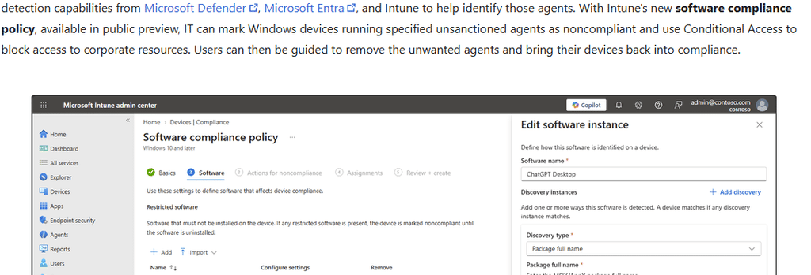
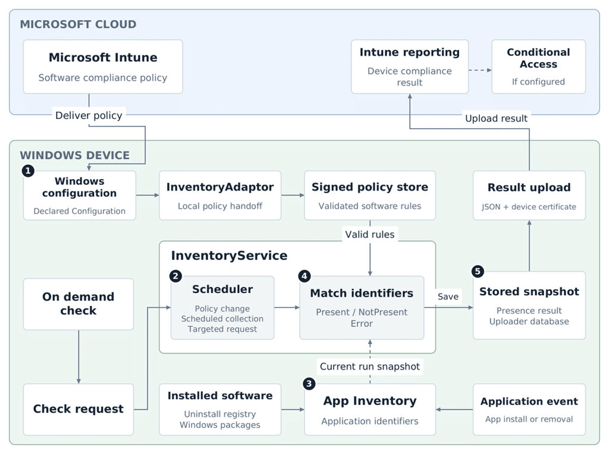
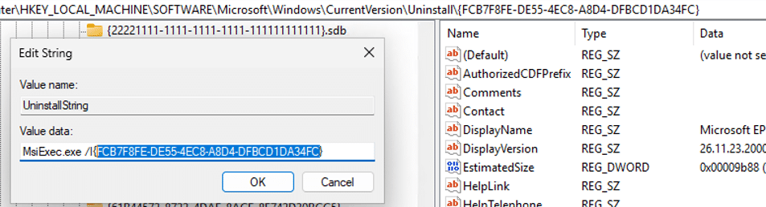
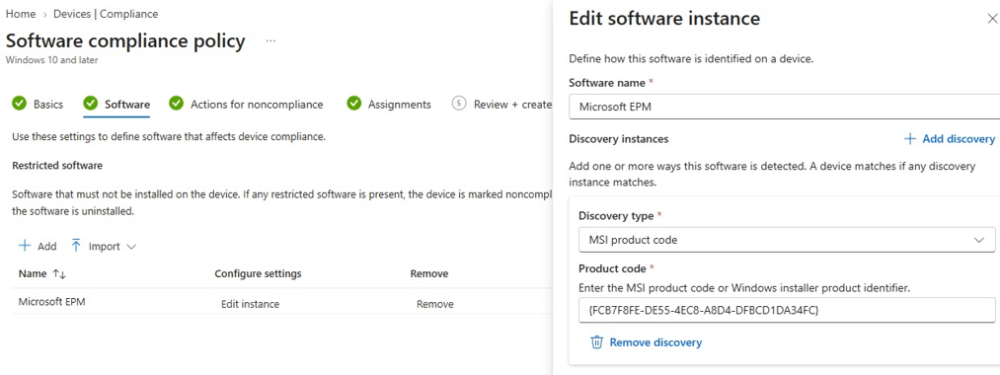
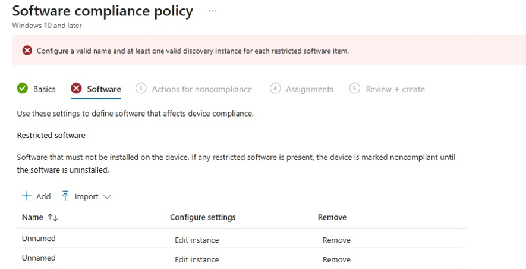
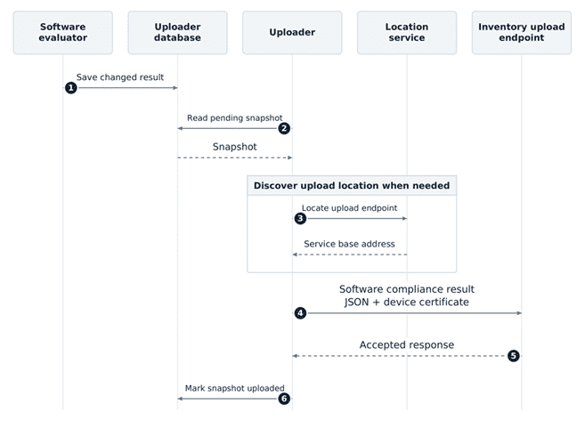
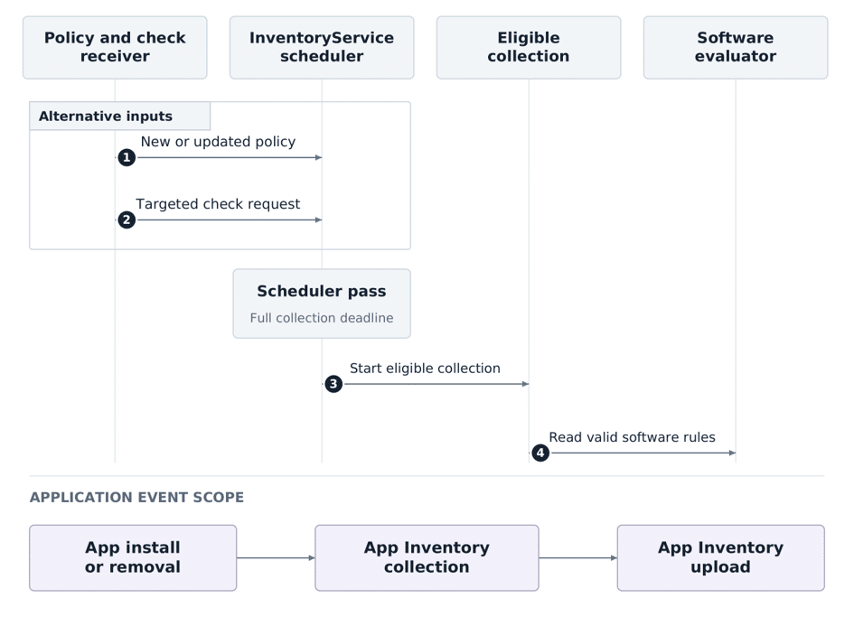
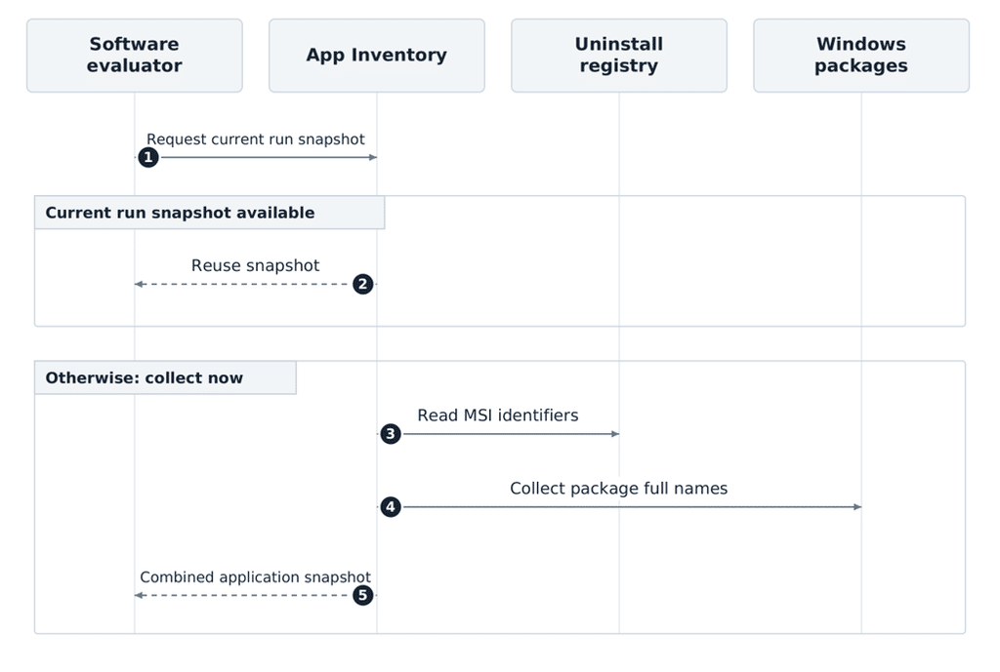
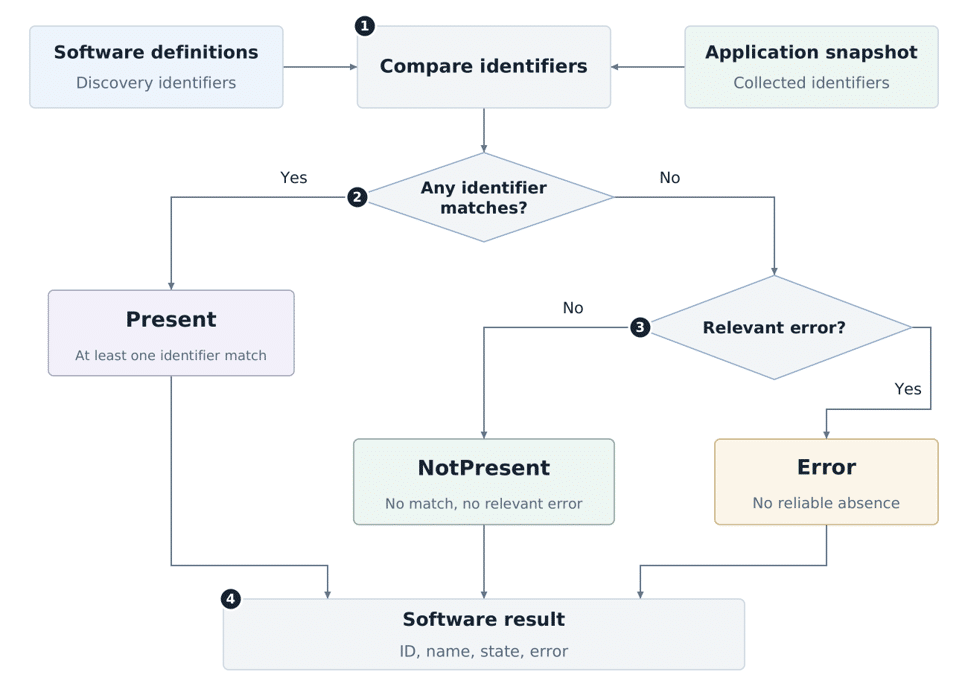
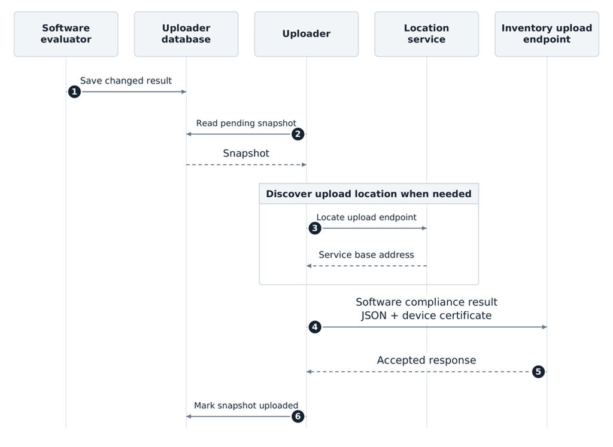

At Microsoft Ignite, Microsoft showed how an Intune software compliance policy can check Windows devices for applications your organization does not allow. You identify each application by its MSI product code or Windows package full name. Intune then uses its presence as part of the device compliance decision.


When Intune finds restricted software, it can mark the device noncompliant. Conditional Access can then block access to company resources if your policy requires a compliant device. Microsoft used AI agents to demonstrate the scenario, but the policy checks the installed application and its identifiers. [1, 3]. Microsoft announced Software Compliance Policies in public preview. Once the restrictions are configured, Windows needs to receive the rules, check the installed software, and return a result. [1]
App Inventory supplies the local application data. Software Compliance compares that data with the restrictions and prepares its own result for Intune. Let’s follow that process from the policy in the admin center to the check on Windows, and then back to the compliance decision.
How we did Software Compliance with A Custom Compliance Policy
We could already use installed applications in a compliance policy. With custom compliance,, a PowerShell discovery script could check whether an application was installed or read its version. The script returned the result as JSON, and a JSON rule defined what counted as compliant. [7, 8]
For example, a script could report whether an unwanted app was present, with the rule requiring it to be absent. Intune could then mark the device noncompliant, and Conditional Access could restrict access if a compliant device was required. [8]. Our guide to custom compliance for third party applications shows that script and rules approach using application versions.
The new software compliance policy gives us a dedicated way to configure restricted applications using supported MSI product codes and Windows package full names. We can define those entries without writing our own discovery script. Custom compliance remains useful for minimum version checks, service checks and other conditions the software policy does not cover.
App Inventory supplies the local application data. Software Compliance compares that data with the restrictions and prepares its own result for Intune. Let’s follow that process from the policy in the admin center to the check on Windows, and then back to the compliance decision.
What the software compliance policy checks
A software compliance policy contains a list of restricted applications. Each entry has a readable name and one or more discovery instances that tell Windows how to identify the application. The policy shown at Ignite supports MSI product codes and Windows package full names. [3]

The check is about whether the configured software is installed. Closing the application leaves its installation in place, so that alone does not resolve the restriction. Microsoft’s guide describes the device remaining subject to the access restriction even while the unwanted application is inactive. [2]
The software evaluator reports what it finds. Intune processes that result for compliance, and Conditional Access can enforce the configured access requirements. Detecting an application does not itself terminate its processes or uninstall it. The public preview also has limits on what can be selected. Microsoft lists editor extensions, npm packages, and standalone executables outside the supported selection experience. An agent delivered through several supported host applications may need several restricted entries. [2]
The Software Compliance Policy overview
The Windows side follows five stages. It receives and stores the software rules, starts an eligible collection, gathers the application data, matches the configured identifiers, and uploads the software result. The overview keeps those stages together so we can follow the same path through the rest of the article.


The local application snapshot is the link between App Inventory and Software Compliance. It provides the installation records needed for matching. The software result then follows its own reporting path back to Intune. The Windows component flow and scheduling values in this article describe Device Inventory Agent Client details can change during the public preview.
Give Intune an application it can identify
The application name makes the policy readable. The discovery identifier does the matching. Before adding a restriction, find the MSI product code or package full name for the installation you want Windows to recognize. App Inventory exposes the platform-specific app ID. Depending on the application, this supplies the MSI product code or Store package full name. App Inventory can also show the installation scope and other details that help identify the correct entry. [4]
The screenshots below use Microsoft EPM as a configuration example because its MSI product code is visible in the uninstall entry. It is simply the application named by the example rule. The Device Inventory Agent performs the software check.


In the software entry, give the application a name, open Edit instance, select MSI product code, and add that GUID. The complete Msiexec command is not needed.


One software entry can contain several discovery instances. For example, you can include identifiers for several installations that should count as the same restricted application. A match against any one of those instances establishes that the software is present.
For Windows packages, use the package full name. A package family name is a different identifier. An application’s friendly name is also insufficient for this comparison.
Keep those identifiers current. If an update changes a product code or package full name, an older entry does not automatically identify the replacement. The rule needs to cover the installations you intend to restrict.
Import several software compliance policy entries
The import option lets you add the same software definitions in JSON. It is useful when you have several entries to prepare. The JSON contains application names and discovery information; it does not contain a PowerShell discovery script.
The example below represents the MSI entry shown in the screenshots. The software item holds the readable name, while discoveryInstances contains the information used to recognize the installation.
{
“restrictedSoftwareItems”: [
{
“displayName”: “Microsoft EPM”,
“discoveryInstances”: [
{
“@odata.type”:
“#microsoft.graph.windowsMsiProductCodeDiscovery”,
“productCode”:
“{FCB7F8FE-DE55-4EC8-A8D4-DFBCD1DA34FC}”
}
]
}
]
}
Every entry needs a name and at least one valid discovery instance. Empty rows still need to be completed or removed, even when another application in the list is valid.


After defining the software, the policy follows the familiar actions for noncompliance and assignment steps. The import JSON describes the restrictions entered in the portal. Windows receives those rules through policy delivery.
Software Compliance Policies Delivery Step By Step
Step 1 Deliver and store the software rules
Windows needs the restricted software definitions before it can evaluate an application. Policy delivery supplies that information and stores it locally, ready for the next applicable collection.


InventoryAdaptor is the handoff into the inventory components. It passes the configuration to InventoryService, which validates the signed policy and its software metadata before storing the rules.
SoftwareComplianceMetadata identifies the software definitions within that policy. The signed policy store is held in InventoryServiceHarvesterDatabase.sqlite, in the DeviceInventorySignedSettingHarvesterPolicy table. The evaluator later reads the usable software rules from that store. This explains why receiving a policy and evaluating it are separate steps. A policy tells Windows what to check. A collection determines when the software definitions are processed and compared with application data.
A new or updated policy can also notify the collection scheduler that work is available. The rules are stored first, so the collection can use the configuration that was delivered. If there are no active software definitions, the evaluator has no restricted list to compare. That is different from evaluating a valid list and finding that none of its applications is installed.
Step 2 Start the right Software Compliance Policy collection
The collection scheduler runs inside InventoryService. It checks whether a full collection is due and whether additional work has been requested. Software Compliance participates when the collection includes its rules and evaluation work.


Two timing values in Device Inventory Agent 6.2611.2.1 describe different parts of that process. The scheduler interval is five minutes. The normal full collection interval is 240 minutes, or four hours. A scheduler pass does not mean a full software evaluation runs on every pass.
| Trigger or interval | What it means in this agent version |
| Five minute scheduler interval | The wait between scheduler passes. |
| Four hour full collection interval | The normal deadline for the next full collection. |
| New or updated policy | Can bring a full collection forward. |
| On demand software check | Queues an additional targeted collection. |
| Application installation or removal | Refreshes App Inventory through its application event path. |
The targeted request is useful when another software check is needed before the next full collection. It adds work to the queue without resetting the normal full collection deadline.
Application events need a separate explanation. An installation or removal can refresh App Inventory, but that event alone does not establish that a Software Compliance evaluation also ran. The relevant software collection still needs to take place.
These intervals describe collection scheduling. They do not promise that Intune, the device compliance state and an access decision will all update within the same period.
Step 3 Collect installed application data
Once the software rules participate in a collection, the evaluator needs application data for that run. This is where App Inventory fits into the software compliance flow.


If App Inventory has already collected the applications during the same run, Software Compliance can reuse that snapshot. Otherwise, it can request application collection for the software check. Both paths supply local installation data for the comparison. Windows provides that data through two main sources. Win32 installation records come from the uninstall registry locations. Windows package registrations provide information about Store applications. These are also the collection sources Microsoft documents for App Inventory. [4]
The MSI comparison uses identifiers classified as MSI product codes. The Windows package comparison uses package full names. The application’s friendly display name helps an administrator read the policy, but it is not the matching value. In this agent version, collecting the application data also depends on an App Inventory policy. App Inventory itself requires an assigned configuration policy to enable collection, as described in Microsoft’s inventory documentation. [4]
The useful distinction is between local collection and cloud reporting. Software Compliance can use the application snapshot for the current collection. It does not have to perform its local comparison against the application report displayed in the admin center.
Step 4 Software Compliance Policies Will Match the restricted software
The evaluator now has both inputs: the restricted software definitions and the installed application identifiers. It compares them and produces a result for each configured software item.


| Local result | What Windows established |
| Present | At least one configured discovery identifier matched an installed application. |
| NotPresent | No configured identifier matched, and no relevant error prevents a reliable absence result. |
| Error | No match established presence, and an error prevents a reliable absence result. |
Multiple discovery instances use OR logic. One matching identifier is enough to establish that the configured software is present. Windows does not need every instance to match the same installation. Errors matter when establishing absence. If the required application information cannot be read reliably, a failed check must not become a clean NotPresent result. A confirmed match, however, already establishes presence even if another discovery attempt encounters a problem.
These are application presence results. Intune still needs to process them as part of the policy and device compliance state. Present supplies the evidence for a restricted application; it is not the complete state of every compliance requirement on the device. The check also needs to see the installed application records. Starting an installer does not mean the final result changes at that instant. The applicable collection must run and collect the resulting installation information.
Step 5 Save and upload the Compliance Policy result
After the comparison, the agent prepares a software compliance report. It includes a snapshot identifier, a collection time, and the application results. Each application result identifies the software and records its state and any error.


The Software Compliance Policy result is saved in InventoryUploader.sqlite in the SoftwareComplianceSnapshot table. This is separate from the signed policy store. One holds the rules received from Intune; the other holds the results produced by the local check. Software Compliance has a dedicated upload route for those results. The uploader uses the discovered InventoryUpload address and sends the software report with the device’s MDM certificate. Application inventory reporting remains a separate operation.
That separation matters during a targeted check. Windows can collect the application information needed for compliance without also sending the ordinary App Inventory report as part of that same targeted operation. The agent can also avoid repeating an unchanged report. It compares the application results with the previous snapshot and tracks the snapshot that was uploaded. Another collection therefore does not always require uploading identical results again.
For troubleshooting, follow the result through these stages: a software result was produced, a snapshot was stored, the upload was accepted, and the relevant compliance status was processed. A collection finishing is only one part of that sequence.
From software presence to device compliance
The software result becomes part of the device’s compliance state. Microsoft describes Software Compliance as marking a targeted device noncompliant when restricted software is detected. A Conditional Access policy requiring a compliant device can then restrict access to protected company resources. [1]
Take an application your organization has placed on the restricted list. Windows finds an identifier that matches the rule and reports Present. Intune processes the result for the software policy. If the device is noncompliant, the configured Conditional Access requirements can affect its access. The user then needs a clear explanation of what is wrong and what to do next. Microsoft’s guidance describes a custom message that identifies the problem and explains the required action. [2]
After removing the application, the user can request another compliance check. A successful compliance evaluation can establish that the restricted software is no longer present. Intune then processes the updated result, and access follows the organization’s Conditional Access requirements. Other compliance requirements still apply. [2]
This is also why application detection, device compliance and Conditional Access should stay visible as separate stages in the explanation. They contribute to the same outcome, but they have different responsibilities.
More improvements to Intune compliance
Software Compliance joins two other compliance improvements I recently covered.
With local compliance detection, a supported Windows device can notice a change, such as the firewall being switched off, and ask Intune to check again. Intune still evaluates the compliance policy. I covered that flow in Faster compliance updates for Windows devices.
Custom compliance has also gained a configurable schedule. Intune 2611 lets you choose 15 minutes, 30 minutes or 1 to 8 hours between discovery script runs. Configure Evaluation Frequency For Custom Compliance Scripts explains how the IME receives that schedule and returns a fresh result.
Those changes improve when Intune receives updated information. Software Compliance adds another thing you can check: whether restricted software is installed. Each follows its own collection and reporting path.
A dedicated Software Compliance policy for restricted software
Software Compliance gives us a dedicated policy for restricted applications. App Inventory provides the local application records. Windows checks those records against your restrictions, then returns a separate software result to Intune.
That is the process behind the experience Jason showed at Ignite. If an application is added or removed and the expected status has not appeared, follow the same path: policy delivery, collection, matching, upload and the final compliance decision.
Sources and version context
Microsoft describes Software Compliance as public preview. The public announcement and session explain the feature and intended user experience. The Windows architecture, local stores and timing values described here refer to Device Inventory Agent 6.2611.2.1.
[1] What’s new in Microsoft Intune at Microsoft Ignite. Microsoft Intune Blog. 17 November 2026.
[2] A guide to governing local AI agents with Intune. Microsoft Intune Customer Success. 17 November 2026.
[3] What’s New in Intune Secure Patch and Scale BRK404. Jason Roszak at Microsoft Ignite. Software Compliance at 38:29 and policy demonstration at 39:20.
[4] App inventory for Windows devices in Microsoft Intune. Microsoft Learn. Accessed 21 November 2026.
[5] Inside Intune: Faster compliance updates for Windows devices. Rudy Ooms, Patch My PC. 7 October 2026.
[6] Configure Evaluation Frequency For Custom Compliance Scripts. Rudy Ooms, Patch My PC. 17 November 2026.
[7] Configuring Intune Custom Compliance Policies for Third Party Applications. Raunak Desai, Patch My PC. 1 January 2024.
[8] Custom compliance settings in Microsoft Intune. Microsoft Learn. Accessed 21 November 2026.